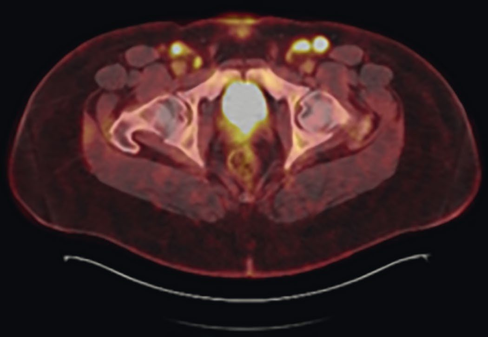
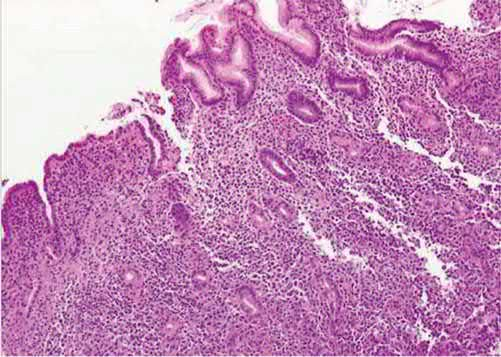
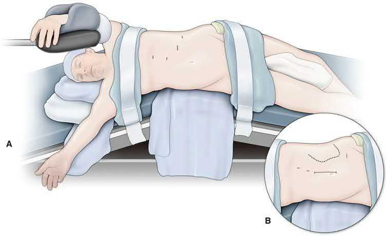
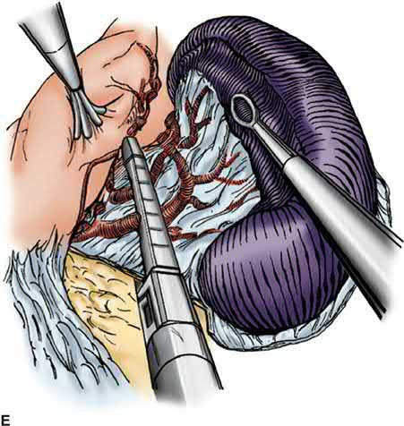

Lymphoma (Surgical Aspects)
Summary
- Lymphoma is a malignant proliferation of lymphoid cells that is primarily managed with chemotherapy and radiotherapy, but surgeons play an essential role in tissue diagnosis (lymph node or organ biopsy), in the historical and occasional contemporary use of splenectomy, and in managing extranodal disease (particularly gastrointestinal lymphoma) and its complications [1][2].
- Hodgkin lymphoma is characterised by Reed-Sternberg cells and staged by lymph node/organ distribution, while non-Hodgkin lymphoma comprises a heterogeneous group of B- and T-cell neoplasms, most commonly involving the spleen and gastrointestinal tract among extranodal sites [2][3].
- Surgery today is rarely curative for lymphoma but remains central to diagnosis, staging in select scenarios, and treatment of lymphoma-related organ complications [4].
- UK practice on the surgeon's part of lymphoma care is set by NICE NG52, Non-Hodgkin lymphoma: diagnosis and management, published in 2016.
- Only two of its fourteen sections concern the surgeon (diagnosis and staging) and the rest are haemato-oncological, which is itself the point: the surgical contribution to lymphoma is almost entirely the acquisition of adequate tissue [5].
- NG52 also records that malignant lymphoma is an HIV indicator condition, so HIV testing follows the relevant NICE guidance [5].
Definition
Lymphoma is a malignant neoplasm arising from lymphoid cells, broadly divided into Hodgkin lymphoma (HL), characterised by the presence of malignant Reed-Sternberg and Hodgkin cells arising from germinal-centre B-cell precursors, and non-Hodgkin lymphoma (NHL), a heterogeneous group of malignancies derived from B-cell or T-cell progenitors and mature B or T cells [1][2]. Classic HL (90–95% of HL) includes nodular sclerosis, lymphocyte-rich, mixed cellularity, and lymphocyte-depleted subtypes; nodular lymphocyte-predominant HL is the other major category and stains CD20-positive but CD30/CD15-negative, unlike classic HL [1].
Pathophysiology
- In classic HL, over 90% of the cellular content of the tumour is reactive immune cells (lymphocytes, histiocytes, plasma cells, neutrophils) surrounding the malignant Reed-Sternberg/Hodgkin cells [1].
- Follicular lymphoma, one of the most common lymphomas in Western populations, arises from germinal-centre B cells and is characterised by the t(14;18)(q32;q21) translocation causing BCL-2 overexpression; about 30% of patients transform to diffuse large B-cell lymphoma, a high-grade, treatment-resistant transformation associated with short median survival [1].
- Mantle cell lymphoma is positive for CD23, cyclin D1, and SOX11; chronic lymphocytic leukaemia (a mature B-cell neoplasm) is positive for CD5 and negative for CD10 [1].
- Burkitt lymphoma is associated with Epstein-Barr virus and an 8:14 translocation involving c-myc [6].
- Splenic involvement occurs in approximately 30–40% of non-Hodgkin lymphoma patients, usually from spread from other sites; primary splenic lymphoma confined to the spleen occurs in fewer than 2% of NHL patients [4].
- Splenic marginal zone lymphoma (formerly "splenic lymphoma"), a rare NHL subtype (under 1% of cases), typically presents with splenomegaly, lymphocytosis, anaemia, and thrombocytopenia [2].
Clinical features
- HL more typically presents as asymptomatic lymphadenopathy, most commonly involving the cervical nodes, and affects adults in their 20s–30s with a second incidence peak over age 50; constitutional ("B") symptoms (night sweats, fever, weight loss, pruritus) occur less commonly but indicate unfavourable prognosis [2][6].
- Splenomegaly and hypersplenism (cytopenias in the presence of splenomegaly) are common presentations of NHL, manifesting as abdominal fullness, early satiety, and pain, or as refractory anaemia, neutropenia, and thrombocytopenia [2].
- Constitutional "type B" symptoms (fever, night sweats, unintentional weight loss) in a patient with lymphadenopathy suggest an underlying lymphoproliferative disorder, and concomitant splenomegaly can accompany lymphoproliferative disease [1].
- Lymphadenopathy lasting less than 2 weeks, lasting over 12 months without change, or fluctuating in size is unlikely to represent malignancy [1].
- Forty per cent of lymphomas arise outside the lymphoreticular system (extranodal), and among these the gastrointestinal tract (mainly small bowel) is the commonest site; primary GI lymphoma does not involve the reticuloendothelial system, and risk factors include chronic H. pylori gastritis, chronic sprue-like syndromes, Mediterranean origin, and immunosuppression (HIV, transplant) [3].
- Gastric lymphoma classically presents with ulcer-type symptoms, and the stomach is the most common site for extranodal lymphoma [7].
- Suspicious axillary lymphadenopathy is most commonly caused by lymphoma, ahead of breast cancer and melanoma, and lymphoma is the most common cause of chylous ascites [6][8].
Examining the enlarged node
Browse's supplies the bedside framework that the lymphoma pathway begins with, and its opening statement is the one most often forgotten: the most common cause of a swelling in the neck is enlargement of the lymph nodes, and even when only one lymph node is palpable, the adjacent nodes are invariably diseased [9]. It gives four main causes of cervical lymph node enlargement, infection (non-specific, glandular fever, tuberculosis, syphilis, toxoplasmosis, cat-scratch fever), metastatic tumour from a primary in the head, neck, chest or abdomen, lymphoma, and sarcoidosis [9].
- Three history features point toward each group.
- General malaise, fever and rigors, or contact with people with infectious disease, suggest an infective cause; loss of appetite, weight loss and pulmonary, alimentary or skeletal symptoms suggest a malignant cause; and irritation of the skin associated with enlarged cervical lymph nodes is often seen with lymphoma [9].
- Browse's also notes the distinguishing pattern for systemic disease: lymphadenopathy caused by systemic illnesses such as glandular fever, toxoplasmosis and sarcoidosis is usually associated with lymphadenopathy elsewhere, so it is important to look for enlarged nodes at other sites [9].
- Two cautions guard against over-diagnosis: in a slim, healthy child, small normal lymph nodes are often palpable, especially in the posterior triangle, and reactive tonsillar nodes are typically tender during active infection, spherical, 1–2 cm, and rubbery in consistency [9].
- Head and neck cancers commonly present with nodal metastases but are not usually associated with symptoms of distant metastasis such as general malaise and loss of weight [9].
Etiology
- Recognised infectious/immunologic associations include Epstein-Barr virus (Burkitt lymphoma, and various lymphomas in immunosuppressed patients), HIV (non-Hodgkin lymphoma, along with Kaposi sarcoma), and HTLV-1 (adult T-cell leukaemia/lymphoma) [3][6].
- H. pylori infection is strongly linked to gastric MALT lymphoma, which typically regresses with H. pylori eradication therapy [7].
- Genetic syndromes with increased leukaemia/lymphoma risk include ataxia-telangiectasia (autosomal recessive, ATM gene) and Bloom syndrome (BLM helicase gene) [10].
- Environmental/occupational carcinogen exposures linked to leukaemia and lymphoma include alkylating chemotherapy agents and certain industrial chemicals [10].
Diagnosis
- Evaluation of new lymphadenopathy considers patient age, node location (isolated vs generalised), duration, antecedent exposures, extranodal symptoms, and examination findings, with a thorough lymphatic examination (cervical, axillary, inguinal, epitrochlear, popliteal) [1].
- Ultrasound characteristics favouring malignancy include a rounded shape (shape index >0.5), loss of the normal echogenic fatty hilum (present in 92% of benign but only 4% of malignant nodes), and peripheral rather than hilar blood flow on Doppler; ultrasound has a reported sensitivity of 97% and specificity of 93% when combined with clinical history [1].
- PET/CT has the highest sensitivity (94%) and specificity (96%) among cross-sectional imaging modalities for identifying malignant nodes and is particularly useful for targeting the node with the highest standardised uptake value (SUV) for biopsy, which is important because it captures the highest-grade component of the disease, especially where follicular lymphoma may show transformation to a higher-grade lymphoma [1].
- Fine-needle aspiration (FNA) is safe, low-risk, and accurate for metastatic carcinoma or melanoma (about 90% accuracy) but is less sensitive for diagnosing lymphoma because it cannot assess nodal architecture; core-needle biopsy provides more tissue for immunophenotyping and can occasionally capture architecture, and is reasonable for less accessible nodes [1].
- Excisional (open) lymph node biopsy is indicated when needle biopsy is inconclusive or lymphoma is strongly suspected, as it allows complete histologic and architectural assessment; for HL specifically, identification of Reed-Sternberg cells is greatly facilitated by excisional biopsy [1].
- Caution against lymph node biopsy is advised in suspected infectious mononucleosis (Epstein-Barr virus) in young patients, since the reactive histologic pattern can produce a false-positive diagnosis of lymphoma [1].
- Sarcoidosis and lymphoma/leukaemia can coexist in the same lymph node biopsy specimen, so lymphoma must be actively excluded when sarcoidosis is diagnosed on a node [1].
- ABSITE Review lists the classic lymphoma workup as (1) core needle biopsy of a lymph node, (2) bone marrow biopsy, and (3) gallium, MRI, or PET scan of the liver and spleen [6].
- Gastric lymphoma is diagnosed by upper endoscopy (EGD) with biopsy [7].


NG52's biopsy hierarchy is the single most important UK statement for a surgeon in this disease, and it inverts the usual "least invasive first" instinct. The three recommendations run in order [5]:
| Recommendation | Content |
|---|---|
| 1.1.1 | Consider an excision biopsy as the first diagnostic procedure for people with suspected non-Hodgkin lymphoma |
| 1.1.2 | Consider a needle core biopsy, taking the maximum number of cores of the largest possible calibre, only when the risk of a surgical procedure outweighs the potential benefits |
| 1.1.3 | If diagnosis is not possible after a needle core biopsy, offer an excision biopsy (if surgically feasible) in preference to a second needle core biopsy |
- Table reformats the NG52 biopsy hierarchy [5].
- Note what is absent from the list entirely: fine-needle aspiration has no place in the NICE diagnostic pathway for non-Hodgkin lymphoma at any point.
- Pathology departments must ensure that tissue from needle core biopsies is conserved so that further analysis can be done if needed [5], a requirement that follows directly from core biopsy being the second-best specimen.
Gene testing is specified where the histology is high grade. Consider fluorescence in situ hybridisation to identify an MYC rearrangement in all people newly presenting with histologically high-grade B-cell lymphoma, and if one is found, use FISH to identify the immunoglobulin partner and the presence of BCL2 and BCL6 rearrangements [5]. Two interpretive rules follow: do not use immunohistochemistry to assess the prognostic value associated with cell of origin in diffuse large B-cell lymphoma, and interpret FISH results in the context of other prognostic factors, particularly age and the International Prognostic Index [5].
FDG-PET-CT is offered for staging only in defined low-stage situations, and is restricted during treatment. Offer it to confirm staging for stage 1 diffuse large B-cell lymphoma by clinical and CT criteria; stage 1 or localised stage 2 follicular lymphoma if the disease is thought to be encompassable within a radiotherapy field; and stage 1 or 2 Burkitt lymphoma with other low-risk features [5]. For other subtypes or stages, consider it only if the result will change management [5]. Do not routinely offer FDG-PET-CT for interim assessment during treatment for diffuse large B-cell lymphoma, but do offer it to assess response at completion of planned treatment for diffuse large B-cell and Burkitt lymphoma [5].
Scoring and Severity
- Hodgkin lymphoma is staged using the modified Ann Arbor system: Stage I involves one lymph node area or two contiguous areas on the same side of the diaphragm; Stage II involves two non-contiguous areas on the same side of the diaphragm; Stage III involves disease on each side of the diaphragm; and Stage IV involves the liver, bone, lung, or other non-lymphoid tissue (excluding spleen) [6].
- Each stage is further classified as "A" (asymptomatic) or "B" (symptomatic, night sweats, fever, weight loss), with "B" symptoms indicating unfavourable prognosis [6].
- Histologic subtype affects prognosis: lymphocyte-predominant HL carries the best prognosis, lymphocyte-depleted HL the worst, and nodular sclerosing is the most common subtype [6].
- Low-risk chronic lymphocytic leukaemia (formerly stage 0) involves only bone marrow/blood lymphocytosis; intermediate-risk (formerly stages I–II) adds lymphadenopathy or organomegaly; high-risk (formerly stages III–IV) adds anaemia or thrombocytopenia [2].
- Consensus staging/response guidelines for Hodgkin and non-Hodgkin lymphoma are provided by the Lugano classification [1].
Treatment and Management
- Chemotherapy (with or without radiotherapy) is the primary curative treatment for lymphoma, and lymphoma is cited among the few solid-organ-equivalent malignancies curable with chemotherapy alone (along with Hodgkin's and non-Hodgkin's disease broadly) [6][10].
- Historically, staging laparotomy (including splenectomy, liver biopsy, and lymph node sampling) was central to determining the extent of abdominal disease in Hodgkin lymphoma and guiding whether radiotherapy alone (for supradiaphragmatic stage I–II disease) or combined radiotherapy and chemotherapy was used; this has been entirely replaced by CT of the chest/abdomen/pelvis and FDG-PET, and because chemotherapy is now used across all stages, surgery is no longer performed to detect subclinical disease [2][4].
- Gastric MALT lymphoma is treated with triple antibiotic therapy for H. pylori eradication and surveillance; radiotherapy is used if the lymphoma does not regress after eradication [7].
- Gastric (non-MALT) lymphoma is treated primarily with chemotherapy and radiotherapy, with surgery reserved for complications or possibly for stage I disease confined to the gastric mucosa [7].
Surgeries
- The surgeon's principal roles in lymphoma are diagnostic (lymph node biopsy) and, in defined circumstances, therapeutic splenectomy.
- Splenectomy is indicated in lymphoproliferative disorders for: treatment of symptomatic splenomegaly (abdominal fullness, pain, early satiety, constitutional symptoms); treatment of hypersplenism (cytopenias with splenomegaly); and tissue diagnosis when the spleen is the only or main site of disease [4].
- Splenectomy may be indicated for diagnosis of splenic marginal zone lymphoma when clinical suspicion is high, since diagnosis can only be made definitively on splenic histology; splenectomy is also used for symptomatic splenomegaly or suspected large-cell transformation on PET/CT, and in spleen-predominant disease may provide durable improvement in splenic sequestration and survival [2].
- Splenectomy is rarely required for non-Hodgkin lymphoma overall (chiefly for pancytopenia), and current HL management reserves splenectomy for symptomatic splenomegaly rather than routine staging [2][6].
- Splenectomy is rarely needed in hairy cell leukaemia given modern purine analogue/targeted therapy, but remains valid for splenomegaly with low marrow involvement, refractory/relapsed disease, splenic rupture, pregnancy, or transfusion-dependent sequestration [2].
- In chronic lymphocytic leukaemia and chronic myeloid leukaemia, splenectomy is reserved for symptomatic splenomegaly, hypersplenism, or splenic rupture, without proven survival benefit [2].
- For lymph node excisional biopsy technique, most procedures are performed under general anaesthesia, although superficial nodes can be biopsied under monitored anaesthesia care or local anaesthesia [1].
- Surgery for gastric lymphoma, when indicated, is typically partial (not total) gastric resection, reserved for stage I disease confined to the gastric mucosa [7].


Complications
Splenectomy for myeloid or lymphoid neoplasms carries substantial morbidity, including bleeding, infection, and portal vein thrombosis; one single-institution series of splenectomy for myeloid neoplasms reported an 18% 30-day mortality [4]. Excisional lymph node biopsy carries low but recognised morbidity including bleeding, infection, seroma/lymphocele formation, nerve injury, and lymphedema, most cases being self-limiting and mild [1].
Prognosis
- "B" symptoms (night sweats, fever, weight loss) in Hodgkin lymphoma indicate an unfavourable prognosis compared with asymptomatic ("A") disease [6].
- Among HL subtypes, lymphocyte-predominant disease has the best prognosis and lymphocyte-depleted disease the worst [6].
- Non-Hodgkin lymphoma overall carries a worse prognosis than Hodgkin lymphoma; 90% of NHL cases are B-cell lymphomas, and the disease is generally systemic by the time of diagnosis [6].
- Transformation of follicular lymphoma to diffuse large B-cell lymphoma (occurring in about 30% of cases) is associated with resistance to therapy and short median overall survival [1].
- Gastric lymphoma overall carries an overall five-year survival rate above 50% [7].
References
- Sabiston Textbook of Surgery, 22nd ed., Ch. 71 Surgeon's Approach to Lymphadenopathy
- Sabiston Textbook of Surgery, 22nd ed., Ch. 72 The Spleen
- Oxford Handbook of Clinical Surgery, 5th ed., Ch. 3 Surgical pathology
- Maingot's Abdominal Operations, 13th ed., Ch. 87 Diseases of the Spleen
- NICE Guideline NG52: Non-Hodgkin lymphoma — diagnosis and management (2016), 1.1; 1.1.1; 1.1.2; 1.1.3; 1.1.4; 1.1.5; 1.1.6; 1.1.7; 1.1.8; 1.2.1; 1.2.2; 1.2.3; 1.2.4; Recommendations www.nice.org.uk
- The ABSITE Review, 2022, Ch. 11
- The ABSITE Review, 2022, Ch. 9
- The ABSITE Review, 2022, Ch. 6
- Browse's Introduction to the Symptoms and Signs of Surgical Disease, 6th ed., Ch. 12, Revision panel 12.1
- Bailey & Love's Short Practice of Surgery, 28th ed., Ch. 12
- Maingot's Abdominal Operations, 13th ed., Ch. 31
- Maingot's Abdominal Operations, 13th ed., Ch. 77